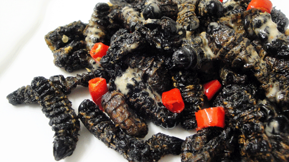

Beef Stew

Description
Ingredients
Amacimbi (Mopane Worms)
Amacimbi are edible caterpillars that are typically dried, then fried or stewed in tomato-onion sauce. They're
crunchy, savory, and rich in protein — often enjoyed with sadza.
Ingredients
- 2 cups dried mopane worms (amacimbi)
- 1 medium onion, chopped
- 2 medium tomatoes, chopped
- 2 cloves garlic, minced (optional)
- Salt, to taste
- Cooking oil (vegetable or sunflower)
- 1 cup hot water (for rehydrating)
Steps
- Soak the dried mopane worms in hot water for about 10–15 minutes to rehydrate.
- Rinse thoroughly and drain to remove sand or debris.
- In a pan, heat oil and sauté the onions until soft and golden.
- Add garlic (if using) and tomatoes, and cook until tomatoes break down into a thick sauce.
- Add the rehydrated mopane worms and stir to coat with the sauce.
- Season with salt and simmer for 10–15 minutes, stirring occasionally.
- Serve hot with sadza.
Amacimbi are edible caterpillars that are typically dried, then fried or stewed in tomato-onion sauce.
They're crunchy, savory, and rich in protein — often enjoyed with sadza.
Home